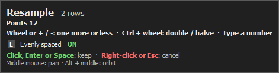

Tools / Resample
Resample
Change the number of points along a selected row.
What it does
Resample sets a new number of points along the selected rows of vertices or edges. More points add vertices; fewer points remove them. The result shows while you change the number.
How to use it
- Select the vertices, edges or borders you want to change (a row of them).
- In the right-click menu, choose Resample (it is in the group with Connect). It only shows at vertex, edge and border level.
- Use the mouse wheel or + / - to add or remove one point at a time, or type the number you want.
- Click, Enter or Space keeps it. Right-click or Esc cancels.

Options
| Key | Option | What it does |
|---|---|---|
| E | Evenly spaced | Spreads the points at equal distances along the row. |
Ctrl + wheel doubles or halves the number of points. The viewport can still be moved while the tool runs: middle mouse pans, Alt+middle orbits, the wheel zooms.
Good to know
- Rows that branch are skipped, and the box tells you how many.
- Undo is one step.